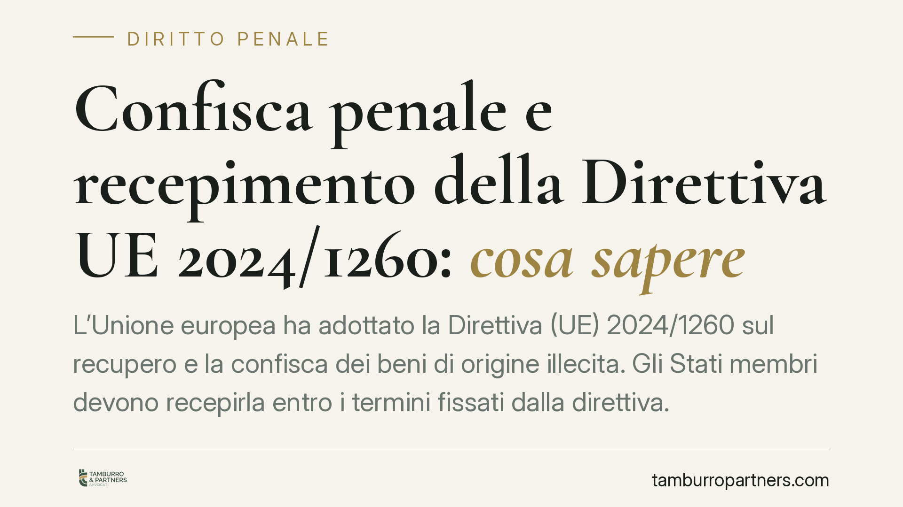

Confisca penale e recepimento della Direttiva UE 2024/1260: cosa sapere
L'Unione europea ha adottato la Direttiva (UE) 2024/1260 sul recupero e la confisca dei beni di origine illecita. Gli Stati membri devono recepirla entro i termini fissati dalla direttiva. Il recepimento italiano è ancora in fase di definizione: conviene capire sin d'ora quali istituti della confisca penale potrebbero essere ampliati e come tutelare la posizione patrimoniale di imprese e terzi.

Di cosa parliamo
La Direttiva (UE) 2024/1260, in materia di recupero e confisca dei beni, chiede agli Stati membri di rafforzare gli strumenti ablativi del patrimonio di provenienza illecita. Il recepimento nell'ordinamento italiano è, allo stato, in corso di definizione: non risulta ancora pubblicato in Gazzetta Ufficiale un decreto legislativo attuativo con data certa di entrata in vigore. Per questo trattiamo la materia al condizionale, concentrandoci sugli istituti esistenti che la riforma è destinata a incidere.
Una precisazione utile: la confisca è una misura *ablativa*, cioè sottrae al soggetto la disponibilità di un bene. Non va confusa con la pena: può operare anche in presenza di condizioni particolari e, in alcune forme, colpisce beni di valore corrispondente al profitto del reato anche quando il profitto stesso non è più rintracciabile.
Il quadro normativo attuale
L'ordinamento conosce più forme di confisca, che la direttiva europea tende ad armonizzare e potenziare.
La confisca cosiddetta "estesa" o "allargata" è disciplinata dall'art. 240-bis c.p. (introdotto dalla L. 161/2017, che ha travasato nel codice il contenuto del previgente art. 12-sexies D.L. 306/1992). Opera, a seguito di condanna per determinati reati, sui beni di cui il condannato non possa giustificare la provenienza e che risultino sproporzionati rispetto al reddito dichiarato.
La confisca per equivalente — quella che aggredisce beni di valore corrispondente al profitto illecito quando questo non è apprensibile direttamente — non è prevista da un'unica norma generale, ma da disposizioni settoriali. Tra le principali: l'art. 322-ter c.p. per i reati contro la pubblica amministrazione, l'art. 12-bis D.lgs. 74/2000 per i reati tributari e l'art. 25-octies D.lgs. 231/2001 in alcune ipotesi di responsabilità degli enti. È un errore ricorrente attribuire questa funzione all'art. 240-ter c.p., che riguarda invece la confisca in casi particolari.
Sul piano dei diritti, va chiarito un punto spesso frainteso. In relazione alla confisca estesa, la giurisprudenza (Cass., Sezioni Unite, e la Corte costituzionale) non parla di vera e propria *inversione dell'onere della prova* in senso penalistico, ma di un onere di allegazione e giustificazione a carico dell'interessato: egli deve fornire elementi credibili sulla provenienza lecita del bene, fermo restando che l'accusa deve dimostrare la sproporzione e i presupposti applicativi.
Cosa potrebbe cambiare
La direttiva europea punta a: ampliare il catalogo dei reati che attivano la confisca estesa; rafforzare la confisca senza condanna in casi tassativi (ad esempio morte dell'indagato o prescrizione, entro limiti definiti); potenziare le misure di congelamento e la cooperazione transfrontaliera nel recupero dei beni.
L'impatto atteso riguarda soprattutto i reati a forte connotazione patrimoniale e la criminalità organizzata. Per i profili delle leggi speciali, eventuali estensioni dovranno essere lette caso per caso: evitiamo riferimenti generici, perché sarà il testo definitivo di recepimento a indicare le fattispecie concretamente interessate.
Implicazioni pratiche per imprese e terzi
Il nodo più delicato per il cliente-impresa e per il terzo in buona fede è la tracciabilità patrimoniale. Un'acquisizione di beni, quote o immobili può essere messa in discussione quando l'altra parte sia coinvolta in vicende penali, anche se l'operazione è in sé lecita.
Il terzo che vanta un diritto su un bene confiscato può far valere la propria buona fede, dimostrando di aver confidato incolpevolmente nella legittimità dell'operazione e di aver versato un corrispettivo congruo. Qui la documentazione fa la differenza.
Cosa fare in concreto
- Verificate la tracciabilità delle operazioni rilevanti: conservate contratti, pagamenti bancari, perizie di stima e prova della congruità del prezzo.
- Documentate la provenienza di beni e disponibilità significative, così da poter assolvere l'onere di giustificazione in caso di contestazioni.
- Effettuate due diligence sulle controparti prima di acquisti di immobili, aziende o partecipazioni, verificando eventuali esposizioni penali.
- Mappate le posizioni di terzi (società collegate, familiari, prestanome apparenti) potenzialmente esposte a confisca estesa o ai terzi.
- Monitorate l'iter di recepimento della direttiva e rivedete le procedure interne non appena sarà pubblicato il testo attuativo.
---
*Contributo informativo a cura di Tamburro & Partners - Avv. Giuseppe Tamburro. Non costituisce parere legale.*
Ogni condominio ha una storia a sé.
Se gestisci un'amministrazione e vuoi un confronto su una specifica questione condominiale, scrivi allo studio. Ti rispondiamo entro un giorno lavorativo.